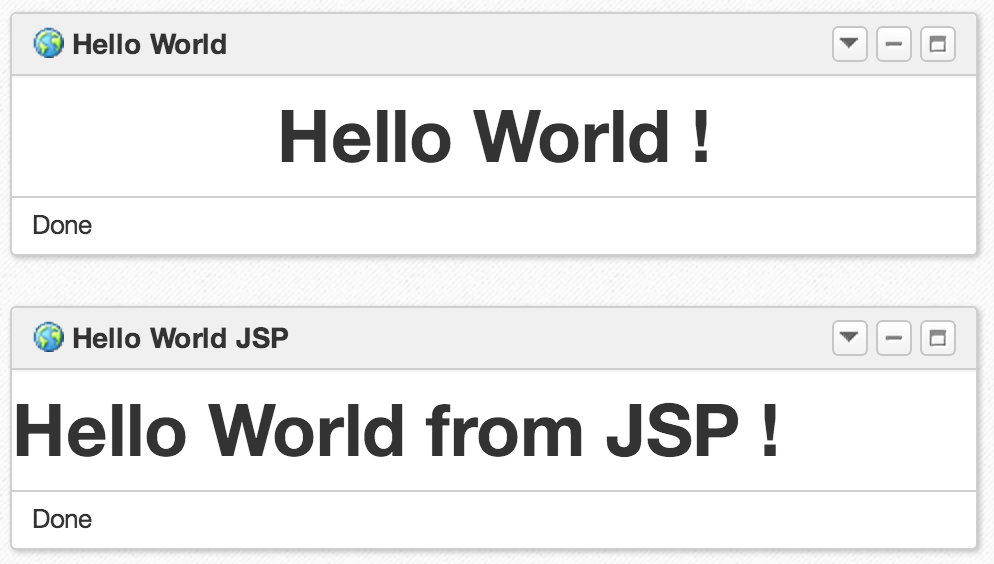
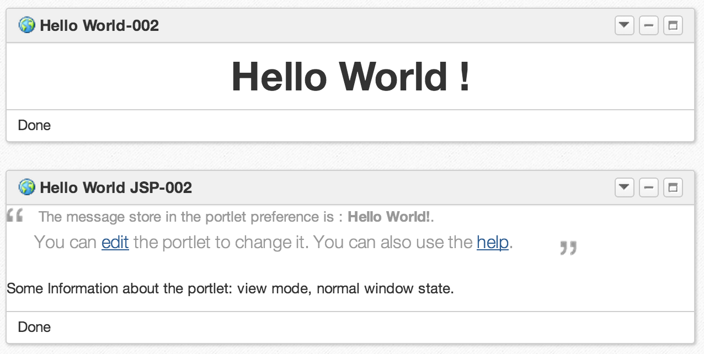
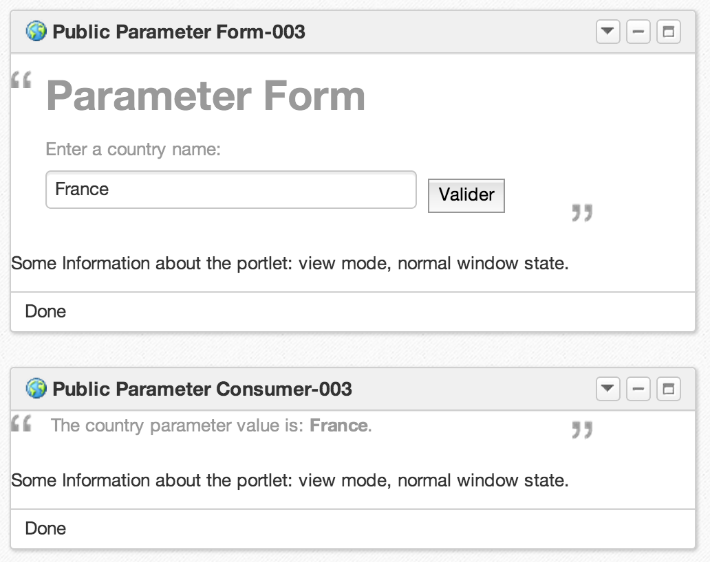
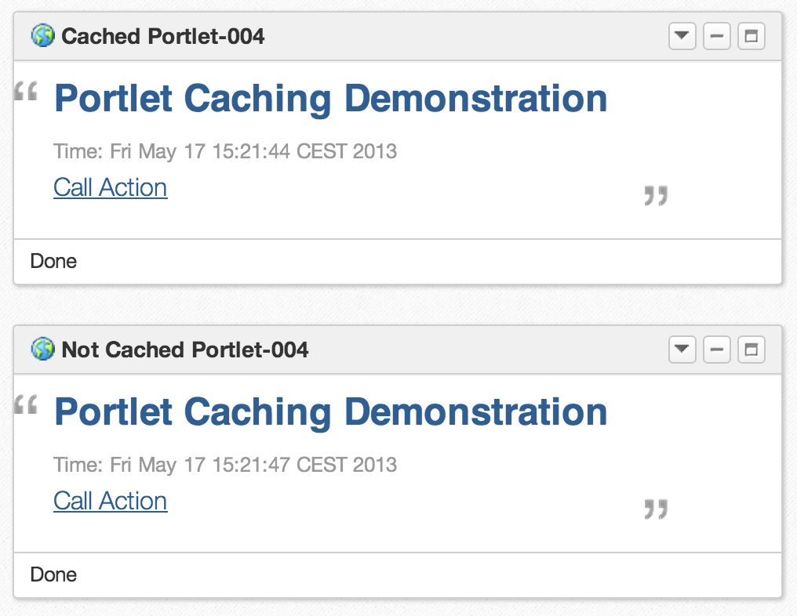
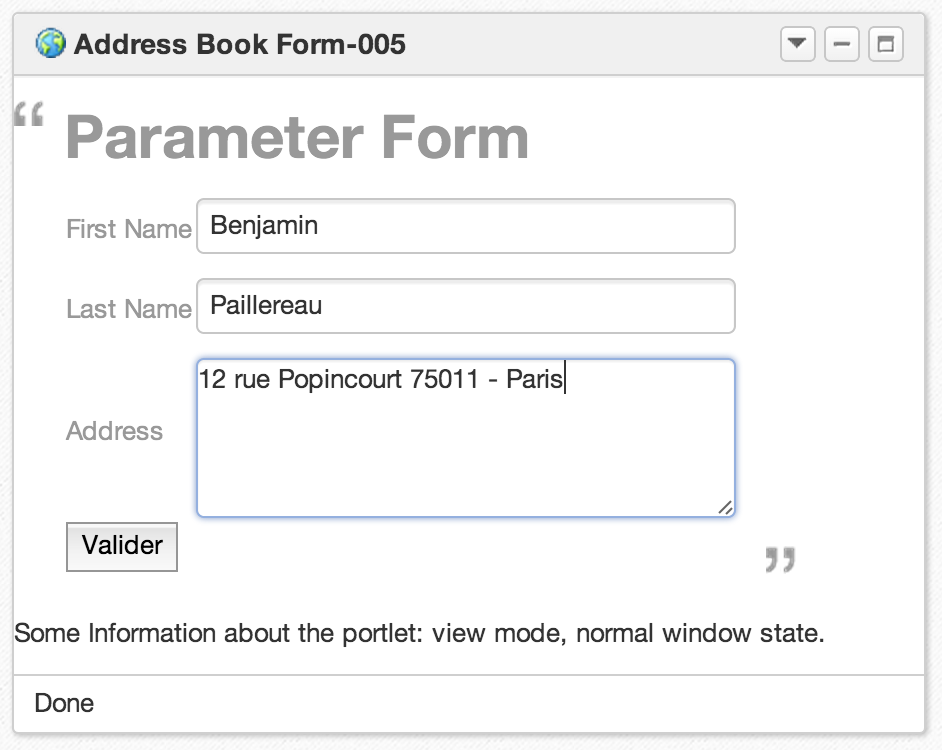
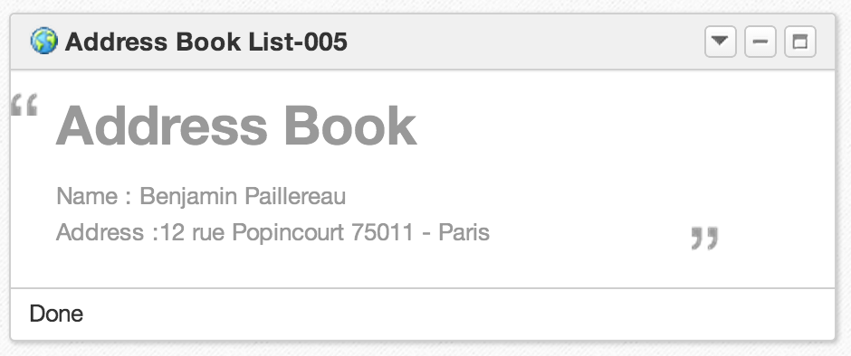
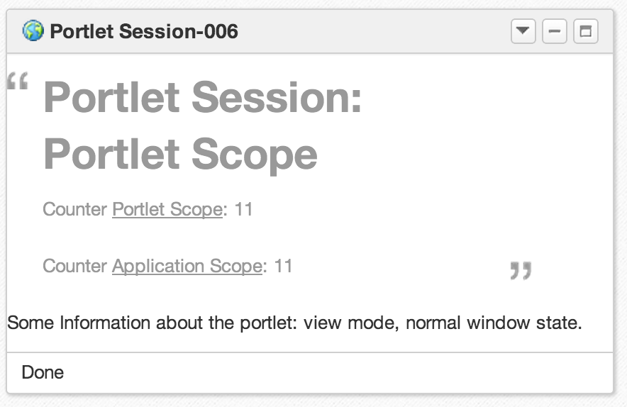
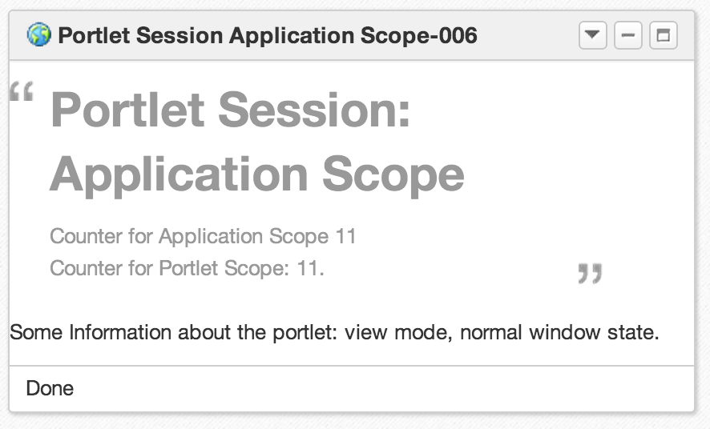

Advanced Portlets
PRP, Sessions, IPC
eXo Platform Academy
May 2013
Agenda
- Portlet Communication
- Examples in Labs
Portlet Communication
Object sharing between portlets
- How do we exchange information between portlets ?
- The JSR 286 adds :
- Portlet session
- Public render parameter
Portlets and Sessions
- Info sharing in the same web application
- Accessible from :
portletRequest.getPortletSession();
- Attributes stored at 2 levels :
Request.setAttribute(name, value, PortletSession.APPLICATION_SCOPE);Request.setAttribute(name, value, PortletSession.PORTLET_SCOPE);
Public Parameter
- Simply share infos between portlets, in different possible applications
- Easier lifecycle than Events
- But limited to String sharing
- For example :
portletRequest.getParameter()portletRequest.setRenderParameter()
Public Parameter
<portlet-app ... version="2.0">
<portlet>
<description xml:lang="EN">Public Parameter Consumer 003</description>
<portlet-name>PublicParamterConsumer-003</portlet-name>
...
<supported-public-render-parameter>country</supported-public-render-parameter>
</portlet>
<public-render-parameter>
<identifier>country</identifier>
<name>country</name>
</public-render-parameter>
</portlet-app>
Coordination : IPC Events
- IPC: Inter Portlet Communication
- Data sharing between portlets
- The object has to be serializable and implements java.io.Serializable
Coordination : IPC Events Configuration
<portlet-app ... version="2.0">
<event-definition>
<name>addressBookInfo</name>
<value-type>org.exoplatform.training.AddressBookEntry</value-type>
</event-definition>
<portlet>
<description xml:lang="EN">Address Book Form 005</description>
<portlet-name>AddressBookForm-005</portlet-name>
....
<supported-publishing-event>
<name>addressBookInfo</name>
</supported-publishing-event>
</portlet>
<portlet>
<description xml:lang="EN">Address Book List 005</description>
<portlet-name>AddressBookList-005</portlet-name>
<portlet-class>
org.exoplatform.training.AddressBookListPortlet
</portlet-class>
....
<supported-processing-event>
<name>addressBookInfo</name>
</supported-processing-event>
</portlet>
</portlet-app>
Coordination: IPC Event Code
Serializable event
- Event producer
public void processAction(ActionRequest request, ActionResponse response) ... {
try {
AddressBookEntry entry = new AddressBookEntry();
entry.setFirstName( request.getParameter("firstName") );
...
response.setEvent("addressBookInfo", entry);
} catch (Exception e) {
e.printStackTrace();
}
}
- Consumer
public void processEvent(EventRequest request, EventResponse response) ... {
// get the event from the request
AddressBookEntry event = (AddressBookEntry) request.getEvent().getValue();
// Put the event in some parameter
request.setAttribute("event", event);
}
Portlet and Resources
- Used to serve :
- Resources for AJAX application
- Binary resources : images, PDF, etc.
- Portlet has a complete control on the response sent to the client
- Portlet must implement
serveResource(ResourceRequest, ResourceResponse)
Exercises
Exercises
- Create a HelloWorld Portlet
- Add the preference management
- Add a public parameter
- Test portlet caching
- Create 2 portlets using IPC events
- Use PortletSession
Lab-001: Simple Portlet
Create HelloWorld Portlet
- Implement the portlet (with or without a dispatcher)
- Configure the portlet and the web application
- Deploy the WAR
- Import the portlet using the application registry
- Show the portlet

Lab-002: Preferences
Add the preference management
- Form in
EDITmode - Show a message en
VIEWmode

Lab-003: Public Parameter
Create a public parameter
- Interchange data between 2 portlets
- Test the portlet with a parameter you enter in a form

Lab-004: Caching
Test Portlet Caching
- Configure a portlet with and without caching
- Call
ProcessAction

Lab-005: IPC
Inter Portlet Communication
- Create an event (Java Class)
- Exchange this event between 2 portlets


Lab-006: PorletSession
Create 2 portlets using PortletSession
- Each portlet store its object in different scopes


Advanced Portlets
Questions and Answers
Copyright 2013 eXo Platform